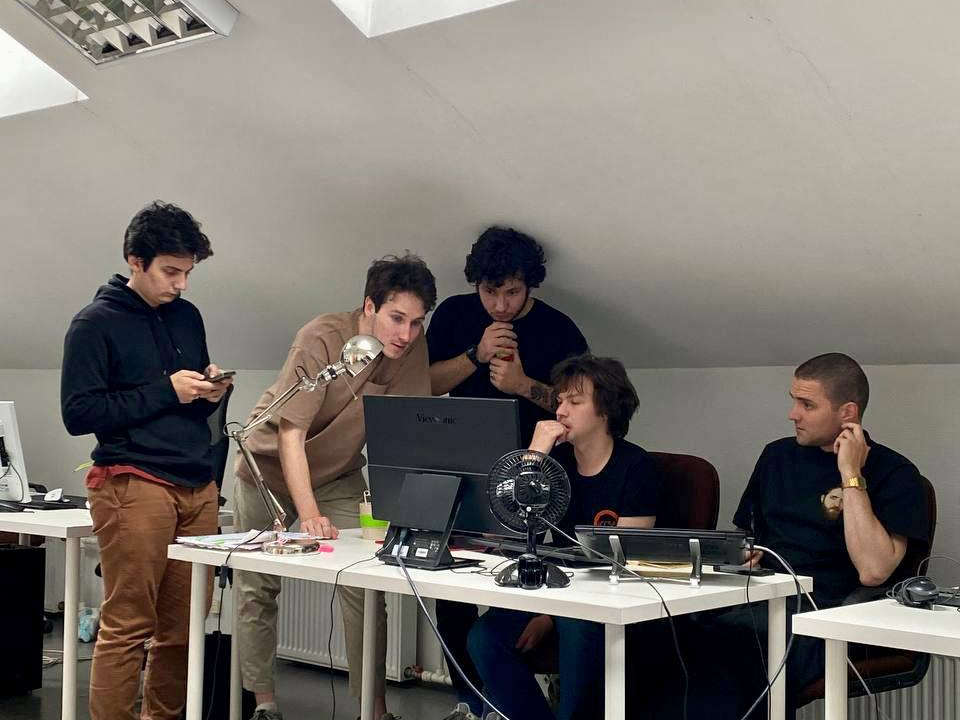

About us

The BlocksNet is developed and maintained by the IDU team.
The Institute of Design and Urban Studies (IDU) is an educational and project-research unit of ITMO University aimed at developing interdisciplinary competencies and scientific approach for solving complex urban problems using information technologies based on the principles of sustainability and social orientation.
Contacts
You can contact us:
NCCR - National Center for Cognitive Research
IDU - Institute of Design and Urban Studies
Tatiana Churiakova - project manager
Vasilii Starikov - lead software engineer
Also, you are welcomed to our issues section!